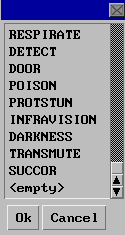
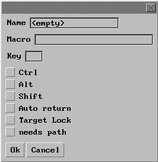

| Macros |
| First: What is a macro? A macro is a preprogrammed action of some kind that can be used by clicking an icon or key. |
| You can make your own macros do what ever you want. I have made several special ones to do my work for me. |
| How to make a macro? Follow these simple steps: |
| Click the top of the main window where it says Macros. Click Set Macro and a new window appears. Select <Empty> Click OK Name your macro in the top line (You will need to use this name later) On the second line, add the words that will perform your needed function. Select a key for the macro's hot key. Select Ctrl or shift so when typing in regular mode that key won't accidently trigger the macro. Select Autoreturn if you want it to take place automatically. If not an Enter keystroke or mouseclick is needed to trigger macro. When done select ok. Your macro is finished. Now select Macro at top of main window again. Select Set Macro Group. If all the slots in your groups are full, you may have to make a new group. Pick an empty slot and click and hold the bar next to the icon. Slide down the list to where it says the name of your macro. Select that one. When done, click OK. Thats it. |
| Sample Macros: |
| Appraise an item like rings: AAA, appraise ring AAA is the first 3 letters in shopkeeper's name. Ring can be changed to any item name. |
| Bezerk with a custom message: B@"Zerking! Stay away! This will warn other crits that you are zerking and zerk at the same time. Change message when it gets stale. |
| Back to Bits of Info. |
| Climb up Climb down Throw Right at (Click Target Lock) To skill Ment skill: Form Enmiss at Darwin To shout a message: "Your message here! To get Naber's corn: nab, work To get a boat pass: urm, pass Withdraw money and put it on counter: AAA, withdraw 500000;@up Deposit money on counter: AAA, deposit coins |
 |
 |